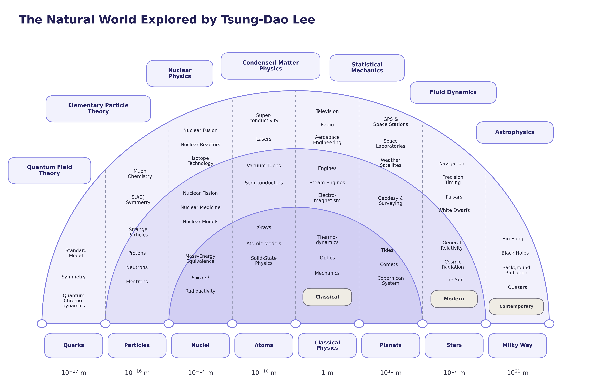
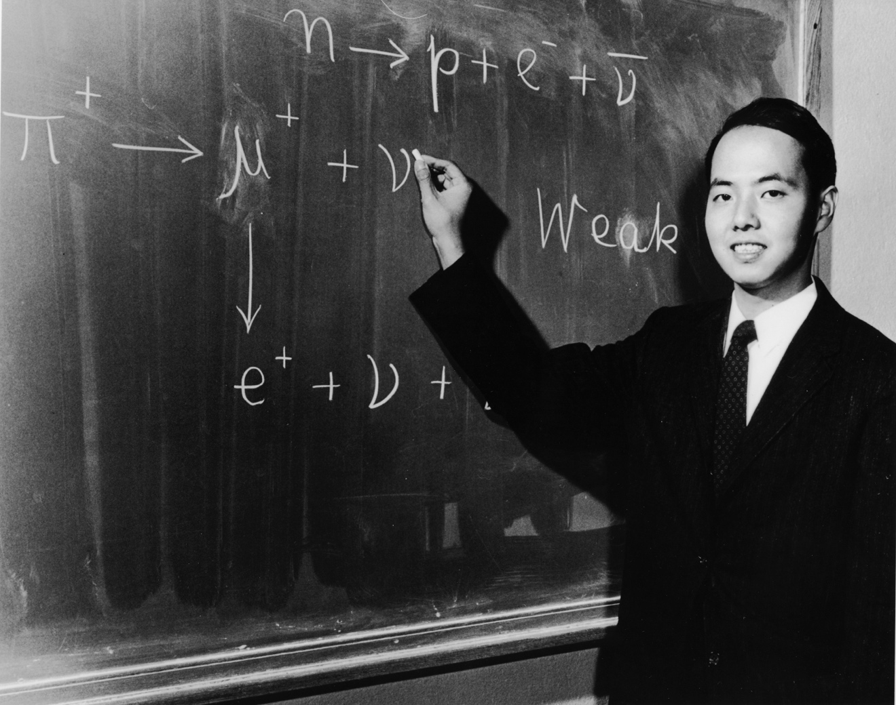
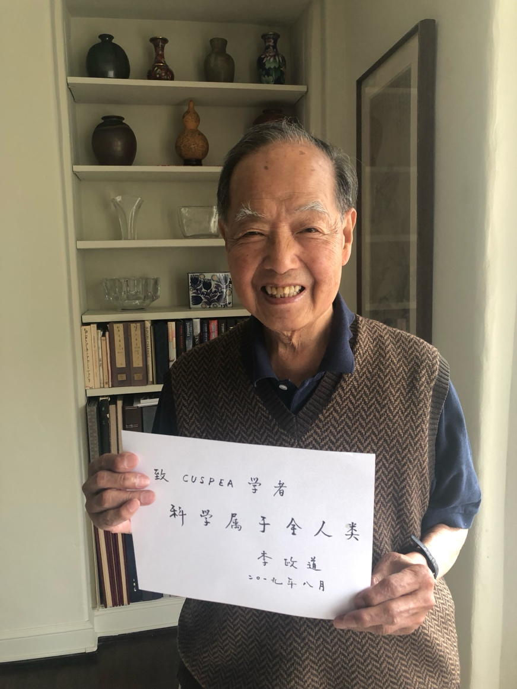
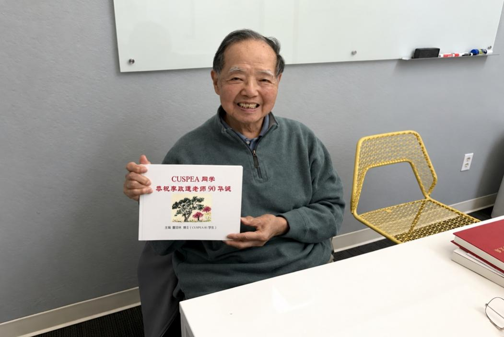

Tsung-Dao Lee at 100: In Pursuit of Science, Dancing Across Boundaries
November 24, 2026 marks the centennial of the birth of physicist Tsung-Dao (T. D.) Lee. Although Professor Lee left us on August 4, 2024, the gifts he bequeathed to science, education, and culture continue to grow and flourish. Looking back across his nearly century-long life, we see a scientist who achieved historic breakthroughs across numerous fields of physics, an educator whose students span the globe, an envoy who built lasting bridges between the scientific communities of East and West, and a luminous, joyful soul who moved effortlessly between science, the humanities, and the arts. How did he accomplish so much, and why did he devote such extraordinary heart and energy to nurturing the next generation?
Delighting in the Study of Physics, Exploring Truth Across Boundaries
Professor T. D. Lee possessed an insatiable curiosity about the natural world, and his research spanned an astonishing breadth—from the vastness of the cosmos and stars down to atomic nuclei and elementary particles; from classical mechanics, statistical mechanics, and fluid dynamics to condensed matter physics, nuclear physics, and quantum field theory. Any one of these domains could occupy a brilliant scientist for a lifetime, yet Lee swam freely from one field to another. Figure 1 illustrates the vast landscape of scientific domains he explored. Below is a brief overview of several of his landmark theoretical contributions.
As a graduate student, Lee collaborated with Marshall Rosenbluth and Chen-Ning Yang to study the interactions of mesons with nucleons and leptons. Discovering that the coupling constants of several decay and capture processes were roughly identical, they postulated the existence of a single “intermediate boson,” naming it the “W” particle (with “W” standing for “Weak”). This elevated Enrico Fermi’s earlier idea that beta decay was driven by a specific “weak force” into the recognition of the weak interaction as a universal force of nature—marking the beginning of Lee’s lifelong bond with the weak interaction. As his former doctoral student, Professor Yang Pang, observed: “Professor Lee lived through the entire arc of humanity’s understanding of the weak force—from its initial discovery and the breakdown of parity conservation, to the formulation of diverse weak-interaction theories, the prediction of new phenomena, and a wealth of experimental confirmations.”
In his 1949 doctoral dissertation, Lee connected the finite internal temperature, chemical composition, and energy-generation mechanisms of white dwarfs, demonstrating that white dwarf interiors cannot contain substantial amounts of hydrogen and that internal nuclear reactions are insufficient to sustain their radiation. This work deepened our understanding of the structure and stability of white dwarfs, earned the University of Chicago’s prize for an outstanding dissertation that year, and its core conclusions remain accepted by the scientific community today.
In 1951, Lee published a study elucidating the differences between two-dimensional and three-dimensional fluid turbulence—findings of particular value to meteorology and weather forecasting. The paper caught the admiration of the renowned mathematician and father of modern computing John von Neumann, who championed Lee’s recruitment to the Institute for Advanced Study in Princeton, hoping the young physicist would apply his talents to the emerging field of computational science.
In 1952, Lee and C. N. Yang co-authored two landmark papers employing rigorous mathematical analysis to study equations of state and phase transitions, theoretically deriving the mechanism of discontinuous (first-order gas–liquid) phase transitions. Known as the “Lee–Yang Theorem,” it remains a classic pillar of statistical and condensed matter physics. After reading their work, Albert Einstein specifically invited both young physicists to his office to discuss its physical significance.
In 1954, Lee focused his energies on constructing the “Lee Model.” As Dr. Yang Pang noted, “This model is one of the rare exactly solvable models in quantum field theory; it had a profound impact on subsequent field-theory research and renormalization, allowing renormalization to be derived with complete rigor.” Leading theoretical physicists such as J. Robert Oppenheimer, Wolfgang Pauli, and Werner Heisenberg all praised the Lee Model highly.
By 1955, Lee’s attention turned to the θ–τ (theta–tau) puzzle: were θ and τ two distinct particles, or the same particle? Could certain bedrock assumptions of physics—such as parity conservation—actually be flawed? That year, he co-authored an exploratory paper with Jay Orear. In early April 1956, at the Sixth Annual Rochester Conference on High Energy Nuclear Physics, the θ–τ puzzle took center stage; scientists proposed numerous hypotheses, yet no consensus emerged.
Immediately following the Rochester Conference, Lee discussed the θ–τ puzzle and the question of parity with his Columbia University colleague, experimental physicist Professor Jack Steinberger, proposing the use of a pseudoscalar observable for both theoretical analysis and experimental design. The key was to examine the correlation between spin (intrinsic angular momentum) and direction of motion as a direct test of parity. Following Lee’s suggestion, Steinberger’s group measured angular correlations in the production and decay of Λ hyperons to probe spin and search for signs of parity violation, though the statistical evidence proved inconclusive. Lee swiftly consulted Chien-Shiung Wu, a renowned authority on beta-decay experiments. Recognizing immediately that previous beta-decay experiments had never actually tested parity conservation, Wu set aside her other commitments and threw herself into the experiment.
In June 1956, Lee and Yang completed their historic paper, “Question of Parity Conservation in Weak Interactions,” pointing out that existing weak-interaction experiments had not adequately tested whether parity is conserved and proposing several concrete experimental tests. Upon its publication in October 1956, the paper sent shockwaves through the physics community. In January 1957, they submitted a follow-up paper, “Parity Nonconservation and a Two-Component Theory of the Neutrino,” presenting a clear theoretical framework and definitive conclusions on parity violation. That same month, Chien-Shiung Wu’s team completed the paper confirming parity violation in weak interactions via beta decay: measuring the correlation between the emission direction of electrons and the nuclear spin of Cobalt-60, they found that electrons were emitted preferentially opposite to the nuclear spin direction. This pseudoscalar correlation proved that the weak interaction distinguishes left from right. Soon afterward, nearly a hundred experiments confirmed parity nonconservation from diverse angles.
The discovery of parity violation in weak interactions was earth-shattering. The two young Chinese physicists won the Nobel Prize in Physics at the fastest pace in history—publishing their paper in October 1956 and receiving the prize in October 1957—and legions of scientists followed in their footsteps. Yet the shock to physicists ran even deeper, for a quasi-axiom of the physical world had been overturned. Experimental physicist Isidor Isaac Rabi remarked: “A rather complete theoretical structure has been shattered at the base, and we are not sure how the pieces will be put together.” Before learning of the experimental results, Wolfgang Pauli had written privately to Victor Weisskopf: “I do not believe that God is a weak left-hander.” Yet confronted with the decisive experimental data and Lee and Yang’s theoretical analysis, even the famously proud Pauli had to concede.
American theoretical physicist and science writer Jeremy Bernstein once recounted a revealing episode: on a Saturday in the spring of 1958, he ran into Lee at the Institute for Advanced Study in Princeton and asked whether he had considered the effect of hyperfine splitting on muonic atoms. Lee brought Bernstein into his office and rapidly worked through the calculations on the blackboard. On Monday morning, Bernstein found a typed manuscript in his mailbox authored by Bernstein, Lee, Yang, and Henry Primakoff. He was stunned: merely for asking a question, he had been made first author! Bernstein noted that Lee’s gesture was extraordinarily generous—a simple acknowledgment would have been entirely customary in the scientific community. Thanks to that paper, the Institute renewed Bernstein’s appointment for another year. The story vividly reflects Lee’s scientific integrity and magnanimity of spirit.
Having reached the pinnacle of science at age thirty, Lee continued to live by the Tang poet Du Fu’s dictum—“Carefully probing the laws of nature brings true joy”—following his curiosity into many profound and fascinating problems. In 1964, for example, his work with Michael Nauenberg formed a cornerstone of the Kinoshita–Lee–Nauenberg (KLN) theorem, clarifying how mass singularities and infrared divergences cancel when summing and averaging over degenerate states under appropriate conditions—a result that later became a vital theoretical foundation for quantum chromodynamics (QCD) jet calculations. Reflecting on how Lee moved so effortlessly across so many subfields of physics, his doctoral student Professor Haicang Ren of ShanghaiTech University observed: “There are really only a handful of truly fundamental principles in physics. Professor Lee understood the essence of physics so deeply that once he grasped the core, everything connected; disciplinary boundaries simply held no constraints for him.” Yang Pang similarly remarked that because Lee always derived his research from first principles, artificial walls between subfields of physics did not exist in his mind.
Figure 1: The scientific domains explored by Tsung-Dao Lee (Source: Tsung-Dao Lee Library, Shanghai Jiao Tong University).

Master of Theory and Experiment, Continuing the Fermi Legend
Isidor Rabi once praised Enrico Fermi as the world’s last universal physicist equally at home in theory and experiment. When Rabi and his colleagues recruited the 26-year-old T. D. Lee to Columbia University as an assistant professor in the fall of 1953, they hoped this protégé of Fermi would likewise be a theorist deeply versed in experiment. Years later, Rabi must have felt deeply gratified that he had indeed found Fermi’s true heir.
Lee’s theoretical papers—such as “Question of Parity Conservation in Weak Interactions”—were remarkable not only for their physical insight, but equally for the brilliance of the experimental proposals they contained. Maintaining close friendships with experimentalists, he inspired three separate groups of Columbia colleagues within just over six months to conduct parity experiments, while also encouraging physicists at the University of Chicago and elsewhere to join the effort early on. This Fermi-inspired synthesis of theory and experiment remained as distinctive and enduring as a fingerprint throughout his entire scientific career.
Between 1969 and 1974, Lee collaborated with Italian theoretical physicist Gian Carlo Wick to investigate vacuum stability and the possibility of abnormal nuclear matter, proposing that high-energy heavy-ion collisions could be used to explore novel states of matter. As Yang Pang explained, Lee–Wick theory posited that relativistic heavy-ion collisions could alter the properties of the vacuum, enabling direct experimental tests of symmetry-breaking mechanisms. Over time, growing numbers of physicists joined this endeavor, giving rise to the vibrant subfield of Relativistic Heavy Ion Collider (RHIC) physics.
Beginning in 1983, Lee participated in planning the Relativistic Heavy Ion Collider at Brookhaven National Laboratory (BNL). Building a major scientific facility meant navigating an endless stream of theoretical, experimental, engineering, budgetary, and personnel challenges. Professor Huan Zhong Huang of the University of California, Los Angeles noted that Lee not only pioneered the exploration of vacuum properties and new states of matter through relativistic heavy-ion collisions, but was also one of the single most important driving forces behind constructing RHIC.
In 1997, Japan’s RIKEN and Brookhaven National Laboratory jointly established the RIKEN–BNL Research Center, with both sides strongly urging Lee to serve as its founding director. During his tenure, RHIC was completed and began operations in 2000. In 2005, synthesizing early experimental data, scientists announced that the ultra-hot, ultra-dense matter created in the collisions behaved like a nearly “perfect liquid”—a quark–gluon plasma resembling the state of the universe mere microseconds after the Big Bang. These discoveries carried profound implications for fundamental physics, particle and nuclear physics, and our understanding of the origin of the cosmos.
Lee actively fostered collaboration between the center and the Chinese scientific community, organizing heavy-ion physics workshops in China and inviting numerous Chinese institutions to join international RHIC experiments. Even after stepping down as director, he continued to care for and support its work. RHIC completed its final collision run in February 2026; the treasure trove of data it accumulated will continue to help scientists probe nature’s grandest and smallest mysteries, while the facility itself transitions toward the next-generation Electron–Ion Collider.
Building a particle accelerator had also long been a dream of Chinese scientists. Yet owing to immense scientific and engineering complexity and high capital costs, China’s accelerator project endured decades of starts and stops—famously described as “seven downs and eight ups.” After 1972, as Lee and other Chinese-American scientists began visiting China for academic exchanges, plans for an accelerator grew increasingly concrete and urgent.
In early 1979, alongside the normalization of U.S.–China diplomatic relations, the two countries signed the U.S.–China Agreement on Cooperation in Science and Technology. Its very first flagship initiative was anchored in high-energy physics, leading to the formation of the U.S.–China Joint Committee on High Energy Physics. Lee played a pivotal role in both the signing and implementation of the agreement, serving as Chief Advisor for U.S.–China High Energy Physics Cooperation. Throughout those years, whenever obstacles arose, he stepped in to mediate and steer the partnership safely past crisis.
In January 1980, the Guangzhou Conference on Theoretical Particle Physics convened in Conghua, Guangzhou. Lee pledged his full support for China’s accelerator project and rallied attendees to back the effort. Staking his personal reputation on that promise, he poured decades of tireless effort and coordination into seeing it through.
In March 1981, a delegation of Chinese scientists traveled to the United States and held careful deliberations with T. D. Lee, Luke Chia-Liu Yuan, Chien-Shiung Wu, and Wolfgang K. H. Panofsky, director of the Stanford Linear Accelerator Center (SLAC). They reached a unanimous consensus that building a 2 × 2.2 GeV electron–positron collider was the optimal choice: it offered modest cost, a rich physics window, and the dual capability of supporting synchrotron radiation applications—“one machine, two uses.” After repeated design refinements, construction broke ground in October 1984, with both Deng Xiaoping and T. D. Lee attending the ceremony.
Constructing an accelerator also demanded a deep bench of engineering talent. Leveraging the U.S.–China Science and Technology Cooperation Agreement, Lee mobilized scientists and engineers from several U.S. national laboratories to assist pro bono in the design and construction of China’s collider, while arranging for Chinese high-energy physicists to train as visiting scholars at American national laboratories.
In October 1988, the Beijing Electron–Positron Collider (BEPC) officially entered operation, and Deng Xiaoping and T. D. Lee once again stood side by side at the inauguration ceremony. Subsequently, U.S.–China cooperation expanded into machine operations, experimental design, and data analysis, and later extended to collider upgrades, the Shanghai Synchrotron Radiation Facility, and the Daya Bay Reactor Neutrino Experiment. To this day, BEPC continues to yield major scientific results and train new generations of physicists.
Decades of collaboration forged a cadre of world-class scientific leaders. Because Lee always stepped up to tackle the thorniest problems, Chinese colleagues affectionately nicknamed him “Commissar Lee.” He held exacting standards for quality; those who worked closely beside him remember both his warm encouragement and praise, and just as vividly the moments they received his candid criticism.
Figure 2: From June 10 to 13, 1979, the First Meeting of the U.S.–China Joint Committee on High Energy Physics convened in Beijing, where Deng Xiaoping and Fang Yi met with committee members (Source: Institute of High Energy Physics, Chinese Academy of Sciences).

Those decades of U.S.–China scientific cooperation also produced remarkable high-tech spin-offs—chief among them, bringing the Internet to China. In the early days, dial-up access was painfully slow and prohibitively expensive, a rare “luxury” accessible only to a handful of individuals.
In the autumn of 1988, Dr. Rongsheng Xu—a CUSPEA scholar who had studied and worked for years at SLAC—returned to the Institute of High Energy Physics (IHEP) in Beijing upon Lee’s recommendation, throwing himself into BEPC experimental data analysis and software development.
During the 1991 U.S.–China high-energy physics cooperation talks, American scientists proposed establishing a dedicated international computer networking line to facilitate experimental data transfer and communication. Lee advocated for the proposal with Chinese leaders and joined American scientists in lobbying the U.S. government to resolve concerns and regulatory hurdles. Once both governments granted approval, Rongsheng Xu became the chief technical lead on the Chinese side.
After eighteen months of intensive work by Xu’s team, the dedicated computer link connecting IHEP in Beijing to SLAC in California went live on March 2, 1993. At critical junctures, Lee repeatedly helped clear ideological and bureaucratic roadblocks, rallying support from telecommunications authorities. Staff at the Ministry of Posts and Telecommunications working on the project were astonished by the frequent high-level directives urging them to “speed it up.”
On April 20, 1994, China achieved full-function connectivity to the global Internet, and in May of that year, IHEP launched China’s very first World Wide Web site. If T. D. Lee can be described as a pivotal node in the history of China’s Internet—a human “router” linking China and the United States—then Rongsheng Xu was a self-replicating “software package” that Lee assembled and dispatched back to his homeland, rapidly multiplying to help ignite China’s Internet revolution.
An Apostle of Science, Bridging Science and the Humanities
In his celebrated 1959 lecture, British novelist and physicist C. P. Snow warned of a cultural gulf dividing the humanities and the sciences. Citing the discovery of parity nonconservation as a prime example, Snow marveled at the beauty and originality of its thought, hoping that such scientific breakthroughs would enter the discourse of humanists and help bridge the “two cultures.”
Symmetry is one of humanity’s most fundamental aesthetic principles, as well as a tacit quasi-axiom used by physicists to construct theories. The breaking of parity symmetry by the weak interaction was not only a breathtaking scientific revelation; it also challenged everyday aesthetic intuition, revealing a richer world of captivating possibilities.
Breaking down boundaries and “building bridges” between disparate cultures likewise defined much of T. D. Lee’s public life.
In 1986, Lee and theoretical physicist Zhou Guangzhao co-founded the China Center of Advanced Science and Technology (CCAST), serving as Director and Deputy Director, respectively. Initially co-funded by the Chinese government and the World Laboratory, CCAST aimed to cultivate an open, internationally connected research environment free from bureaucratic red tape, supporting frontier research and fostering domestic and global exchange. Both its institutional architecture and its operating model were groundbreaking in China at the time.
Huaizu Liu, who served as Secretary-General of CCAST for more than two decades, recalled how the center regularly invited leading international scientists to host workshops open to researchers across China. In 1998, CCAST partnered with the U.S. Particle Accelerator School to bring thirty international experts to deliver intensive training to over a hundred Chinese participants, who later became the technical backbone of China’s major scientific facilities.
On May 8, 1993, Lee met with Pope John Paul II in Erice, Italy, speaking as a representative of the scientific community. The encounter continued a centuries-old dialogue between science and religion.
To express gratitude to the Italian government and people for their support of scientific collaboration, Lee designed a bronze statue of Galileo in 2009 and donated it in the name of CCAST to the Basilica of Santa Maria degli Angeli e dei Martiri in Rome. Today, the statue still stands in the basilica, bearing witness to Sino-Italian scientific friendship and inspiring generations to come.
Lee had a deep love for painting, famously declaring that “science and art are two sides of the same coin.” Many of his early sketches were created for his wife—especially during business trips when she could not accompany him; he would capture scenic views to share with her upon returning home, inscribed with tender words of affection. His children and grandchildren, too, often received bespoke paintings on their birthdays, bringing unique joy to the family.
Yixie Xu, the first female CUSPEA scholar, traveled to the United States in 1980 to study at Columbia University. At a memorial gathering organized by Silicon Valley CUSPEA scholars, she choked back tears recalling the delight of receiving Lee’s hand-drawn greeting cards: “Over the years I moved many times, even back and forth across the Pacific between Silicon Valley and Shanghai, yet Professor Lee’s cards always followed me to every new address, becoming the most cherished Christmas surprise I eagerly awaited every December.” Many others, myself included, shared that same feeling—a quiet, luminous moment of one heart warming another.
Lee also invited master artists to visualize the physical world of his imagination, describing scenes verbally or supplying rough sketches. He collaborated with Wu Zuoren, Li Keran, Huang Zhou, Hua Junwu, Chang Shana, Wu Guanzhong, and others to create physics-themed artworks such as “Relativistic Heavy-Ion Collision” and “Symmetry?” These works graced the covers of physics journals, conference proceedings, and posters, becoming treasured collectibles among attendees; several were later transformed into sculptures that continue to inspire young scientists.
Adept at mobilizing resources and connecting dots into lines, Lee used everything within his reach to advance scientific endeavor, while gracefully building bridges between science and art, and between science and religion.
A Master Educator Repaying Gratitude, Passing the Torch to All
T. D. Lee often spoke with deep affection to his students about the three mentors who transformed his life: Shu Xingbei, who awakened his passion for physics; Ta-You Wu, who deepened his grasp of the discipline and recommended him for study in the United States; and Enrico Fermi, who ushered him onto the frontier of world physics. Out of gratitude for his mentors, he always strove to do more and better in educating future generations, passing along both knowledge and kindness.
When he returned to visit China in 1972, Lee saw firsthand the gap separating China from the global scientific frontier and encountered countless scholars and students thirsting for knowledge. On every trip thereafter, he asked himself what he could do for them. Emphasizing fundamental theoretical education and research, he famously compared science, technology, and commercial products to water, fish, and the fish market—each indispensable to the others. He also advocated nurturing scientific talent from adolescence, a proposal that served as the catalyst for the University of Science and Technology of China (USTC) to launch its celebrated Special Class for the Gifted Young in 1978.
In April 1979, Lee traveled to the Chinese Academy of Sciences (CAS) in Beijing to teach in person, delivering two intensive courses over more than two months: “Statistical Mechanics” and “Introduction to Field Theory and Particle Physics.” Yixie Xu, who attended the lectures, recalled that more than a thousand listeners packed the CAS auditorium to capacity. Lee lectured for over three hours straight every day—without taking off weekends or the May Day holiday—patiently answering questions afterward and taking turns inviting students to join him for lunch.
Through this experience, Lee realized that two months could never suffice for students to master systematic knowledge and engage the research frontier. He first selected a few students for graduate study in the United States and organized a small-scale examination. In 1980, Yixie Xu and Haicang Ren entered Columbia University as graduate students—the pilot run of what would become the China–U.S. Physics Examination and Application (CUSPEA) program.
In early January 1980, I was a sophomore at Sun Yat-sen University. Hearing that T. D. Lee, C. N. Yang, and other renowned physicists were attending a conference in nearby Conghua, my classmates and I excitedly signed an invitation letter and asked Professor Huazhong Li, a theoretical physicist at our university, to deliver it, inviting them to give lectures on campus. Both professors accepted immediately.
When Lee arrived to lecture at Sun Yat-sen University, bright floodlights had been set up on stage for photography. Stepping up to the podium, he said sternly: “The lights are too bright—turn them all off! I am not here to put on a show; I am here to lecture to students!” An instant hush fell over the hall; sitting in the audience, I could hear my own heart pounding. University leaders quietly had the floodlights switched off.
When destiny knocks, one may not hear it right away, yet its thunderous resonance can shape an entire life. Only later did I learn that during that very conference in Conghua, Lee had written to Vice Premier Fang Yi proposing to formalize CUSPEA and expand it to dozens of universities across China and the United States. Thus, the CUSPEA program was formally born.
In September 1981, as a senior undergraduate, I sat for the CUSPEA examination and was fortunate to be admitted, traveling to Carnegie Mellon University in 1982 to pursue my Ph.D. in physics. For a child who grew up in remote western Hunan, without the selfless guidance of T. D. Lee and so many senior mentors in both China and the United States, reaching the frontier of modern science would have been nearly unimaginable.
The Tsung-Dao Lee Library at Shanghai Jiao Tong University preserves vast archives of correspondence documenting those pioneers’ shared dedication to nurturing future scientific leaders. Throughout the ten years of CUSPEA, Lee devoted a third of his time each year to the program, writing thousands of letters. According to CUSPEA students at Columbia, the mailbox near his home regularly overflowed, forcing Lee and his wife, Jeannette Hui-Chun Chin, to push a small cart to more distant mailboxes to post the letters.
At the program’s inception, some Chinese-American professors wrote letters opposing the idea of U.S. universities setting entrance exams for Chinese students, causing hesitation and delays among certain domestic supporters. Huaizu Liu recounted that Lee immediately flew from the United States to China, where Deng Xiaoping ultimately gave the decisive green light for the program to proceed according to Lee’s design.
From 1979 to 1988, CUSPEA sent 915 Chinese physics students to North America for graduate study, with full tuition and stipends provided by host universities—an estimated total value of $100 million at the time. Professor Yongde Zhang of USTC marveled that U.S. graduate admissions were traditionally autonomous and decentralized, making unified testing and selection extraordinarily difficult to execute; that Lee, acting simply as a single university professor, built such a program from scratch spoke volumes about his remarkable powers of persuasion and coordination.
Chinese-American scholars in other fields, such as Shiing-Shen Chern in mathematics and Ray Wu in biology, soon followed CUSPEA’s model to send Chinese students to the United States. According to statistics gathered during the reporting of this article, sixteen CUSPEA scholars have been elected to the national academies of China, the United States, and Europe, and hundreds have become accomplished high-tech inventors and entrepreneurs. Academician Chunli Bai hailed CUSPEA as an “ice-breaking feat” of talent exchange in the early era of Reform and Opening-Up. Lee’s own assessment was even more striking: “CUSPEA is more meaningful than my work on parity nonconservation.”
At Lee’s advocacy, China established its postdoctoral research system in 1985; through his joint efforts with the domestic scientific community, the National Natural Science Foundation of China (NSFC) was founded in 1986. These institutional milestones have exerted a profound and lasting impact on China’s talent cultivation and research capacity.
In 1998, Lee and his family and friends formally established the Chun-Tsung Endowment Fund to encourage undergraduate research across six universities; over more than two decades, it has nurtured roughly six thousand “Chun-Tsung Scholars.” As Huaizu Liu recalled, the fund was created in fulfillment of Mrs. Lee’s wish before her passing, with her explicit stipulation that half of the fellowships be reserved for female students. Irene Hennigan, Lee’s longtime administrative assistant at Columbia University who contributed immensely to these efforts and was honored as a “Friend of China,” donated her entire life savings to the fund and chose China as her final resting place.
In 2010, at age 84, Lee made his final visit to his homeland. Over several long, heartfelt conversations with Jie Zhang, then President of Shanghai Jiao Tong University, he decided to donate his manuscripts and family treasures and help establish the Tsung-Dao Lee Library and the Tsung-Dao Lee Institute, inspiring younger generations to carry forward his scientific trajectory.
For the fortieth anniversary of CUSPEA in 2019, Lee penned the calligraphy inscription “Passing the Torch” (Xin Huo Xiang Chuan). When I once asked his eldest son, Professor James Z. Lee, how his father hoped scholars would “pass the torch,” he replied that his father never expected anyone to repay him personally, but rather hoped they would embrace an altruistic spirit—passing kindness and goodwill forward across generations. As James Lee said at his father’s memorial service, everyone who benefited from Professor Lee is a part of his life, and Tsung-Dao Lee will forever remain a part of theirs.
Tsung-Dao Lee’s nearly century-long life was a legend of dancing across boundaries: leaping from one scientific summit to the next, moving seamlessly between theory and experiment, building bridges across cultures and nations, and pouring his heart into nurturing the next generation. He was no deity—simply a university professor who rolled up his sleeves and did so much with his own hands. What sustained him through it all, beyond his profound grasp of the essence of physics, was an abiding kindness toward humanity.
On the centennial of his birth, we remember the papers that transformed physics—and we equally remember the letters written late into the night, the hand-drawn cards mailed to students and friends, and the sight of him and his wife pushing a little cart down the street to mail letters. Professor Lee left his students with four simple characters: “Passing the Torch.” If we can carry this goodwill forward to the next generation, giving more young people the chance to question, explore, and create, that will be our finest tribute to his memory.
Figure 3: Tsung-Dao Lee illustrating weak-interaction processes—including beta decay and the π–μ–e decay chain—at the blackboard (Photographer, date, location, and context unknown).

Figure 4: In August 2019, Tsung-Dao Lee inscribed “Passing the Torch” (薪火相传) for the 40th anniversary of CUSPEA (Photographed in San Francisco by Shanshi Lee; original calligraphy preserved by the author).

Figure 5: In August 2019, Tsung-Dao Lee inscribed “Science Belongs to All Humanity” (科学属于全人类) for the 40th anniversary of CUSPEA (Photographed in San Francisco by Shanshi Lee; original calligraphy preserved by the author).

Figure 6: In November 2016, Tsung-Dao Lee holding a commemorative booklet created by CUSPEA scholars for his 90th birthday (Photographed in San Francisco by Chuilin Wang).

(This article was published in China Science Daily (中国科学报) on November 20, 2026.)